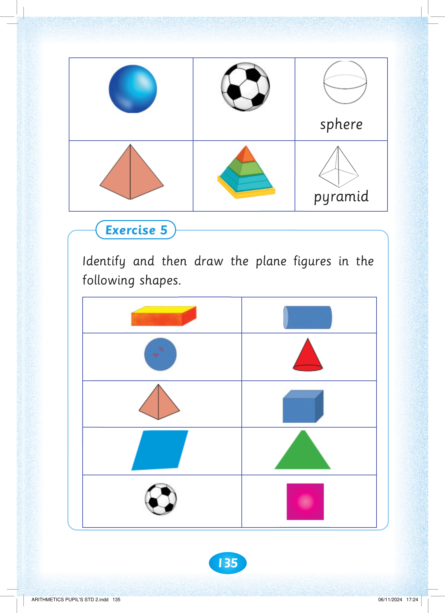
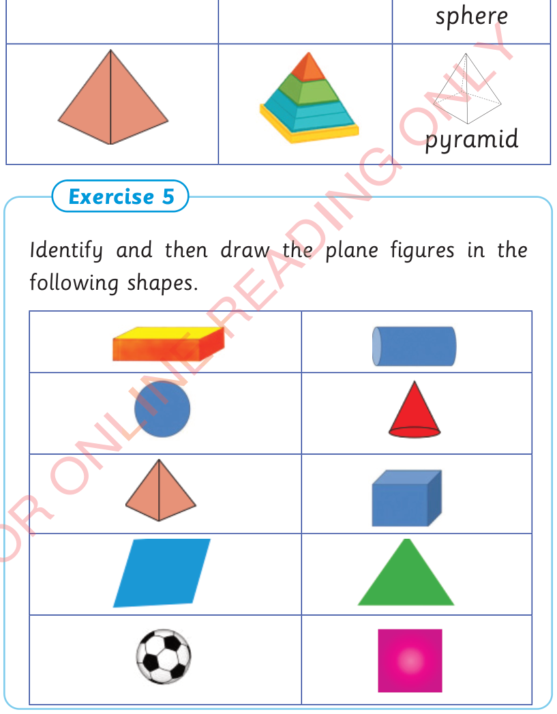
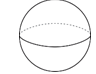
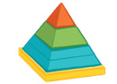
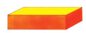
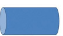
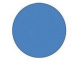
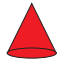
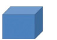

135




The non-plane figures continue with a sphere shown beside a football, and a pyramid shown beside a real pyramid. Exercise 5. Identify and then draw the plane figures in the following shapes. The table shows a cuboid, cylinder, sphere, cone, pyramid, cube, parallelogram, triangle, football and square.

pyramid
Exercise 5
Identify and then draw the plane figures in the following shapes.







ARITHMETICS PUPIL'S STD 2.indd 135
06/11/2024 17:24